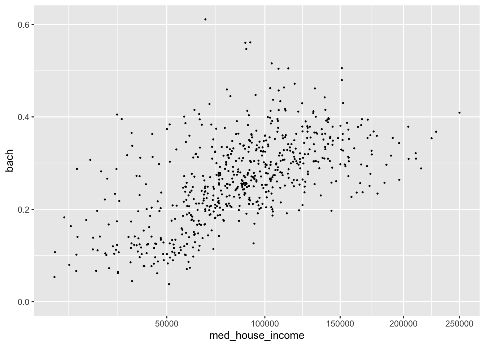

Chapter 12 Grammer of layered graphics II
We’ve developed a strong foundation for building charts from the ground up by specifying our defaults (data, and aesthetic mappings), and adding geom layers. In order to take our charts to the next level we need to familiarize ourselves with the other components of the Layered Grammar of Graphics: scales, coordinates, and facets.
12.1 Scales
Recall from Grammar of Layered Graphics I that when we supply our aesthetic mappings our axes are filled out automatically.

By specifying our defaults in the ggplot() call, we implicitly are providing the x and y axes. From those mappings, ggplot2 is able to identify the type of variable mapped to each aesthetic and its values. That inference makes it possible for us to plot without having to explicitly state what our axes are.
In the above chart, each column is being mapped as a continuous variable. We are able to manually specify what each scale type is by using the various scale_*_type() layers from ggplot2. These layers follow a general format of first specifying scale followed by which aesthetic we’re scaling, and what data type. For example, to change the med_house_income axis to a discrete axis we can apply the layer scale_x_discrete()

In doing so we have lost the axis labels! That is because ggplot2 considers both integers and floating point (numbers with decimals) as continuous and categorical variables as being discrete.
Nonetheless, we have a lot of functions at our disposal to alter the axes to our liking!
12.1.1 Transformations
In our data exploration, we will come across non-normal distributions of data.
- income is almost always right skewed displaying some sort of log-normal-ish behavior.
- we may not want to actually change to underlying values of that variable, but want to apply transformations for the purposes of visualization
- in that case, we can apply scale transformations
- in our visualization of income and education, there is a slight right skew to
med_house_income- it doesn’t justify a logarithmic transformation, but may benefit from a sqrt transformation
- we can apply this with
scale_x_sqrt()

We can apply a log10 transformation as well with scale_*_log10().

lims()
expand_limits()
This is an overcorrection. The slight upward arch in the original plotting is now inverted. Nonetheless, I hope the point is made. In addition to being able to control the defaults, the layers, and now the scales you are well equipped to develop and manipulate your own plots.
It is also important to note that what we have gone through is by no means exhaustive. You should, at minimum, familiarize yourself with both scale_*_reverse(), and scale_*_binned() in your spare time. There are dozens, if not hundreds, of ggplot2 functions to suit your every whim. And, as you have already briefly seen, the ggplot function universe is not relegated to just ggplot2. There are many other packages which have built custom geoms and other enhancements that may benefit you.
12.1.2 Labeling
The plots we create, while lovely as they are, are somewhat lacking in the labeling department. I would put money on it that no publication would accept plots with labels such as the ones above for sole reason being that our axes titles and scale labels are hard to interpret.
We’ve already used it befofe but to be extra clear, to add titles and axis labels to our plots (not adjusting the scale labels) we use a labs() layer. With labs(), you can label any aesthetic you have mapped as well as adding a title, subtitle, caption, and a tag.
Let’s add some titles and labels to our plot.
p <- ggplot(acs, aes(med_house_income, bach)) +
geom_point(size = 1/3) +
labs(
y = "% of population with a Bachelor's Degree",
x = "Median Household Income",
title = "Relationship between Education and Income",
subtitle = "All Massachusetts Tracts",
caption = "Source: Boston Area Research Initiative\nvia US Census Bureau"
)
p
Friends, it’s looking pretty good. But there are just two more changes we need to make: our axes labels! The x and y axes labels are meant to illustrate dollar amounts and percentages but respectively. To change the scale labels. we will use some helper functions from the package scales
{scales} provides handy functions for taking a variable and altering the labeling to match some other format. In our case, we are interested in printing our med_house_income as in a dollar format, i.e. 2000 becomes \$2,000, and bach as a percentage, i.e. .4 becomes %40. To alter our labels we will use scales::dollar(), and scales::percent() respectively.
Isn’t it nice how well named functions can be sometimes?
To produce the examples outlines above we would call the function as such:
Now we have an understanding of how the function behaves, but where do we actually change the labels? This is where we come full cirlce back to our scale_*_continuous() layer. As we mentioned earlier, ggplot() will handle making the scales for us. But ggplot() doesn’t know how we want to label our variables or how they should appear on the axes. And now the impetus is on us to make these changes manually. To change the axis labels we will specify which axis we are altering using the proper scale layer—i.e. scale_y... or scale_x....
12.2 Coordinates
coord_flip()
coord_cartesian() - our default
coord_polar()
12.3 Facets
facet_wrap()
facet_grid()